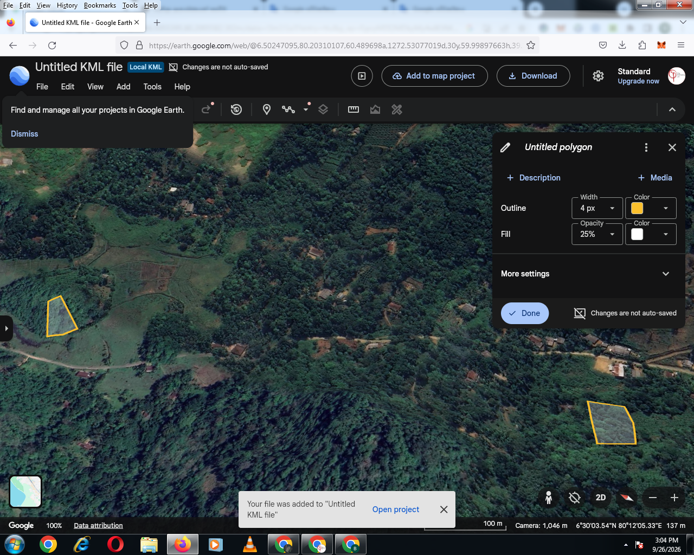
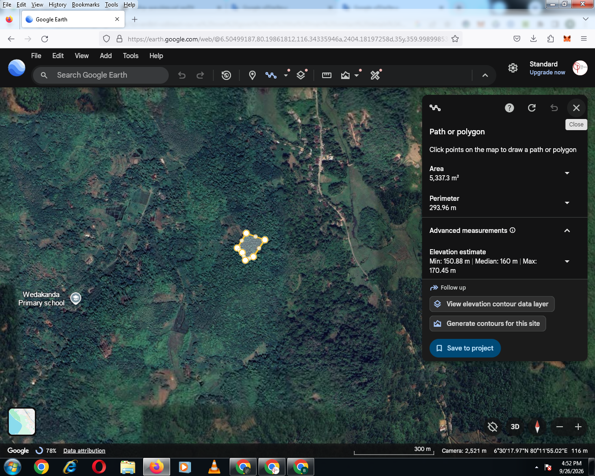
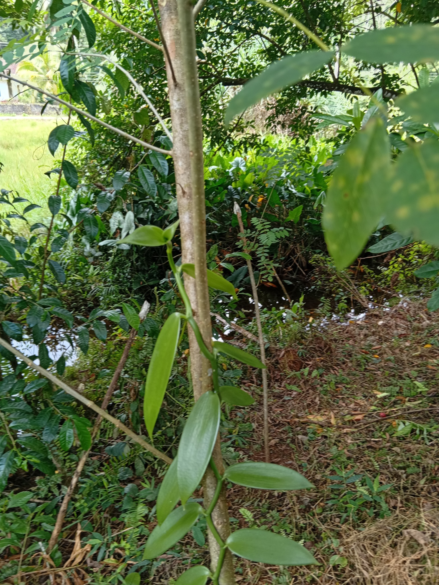
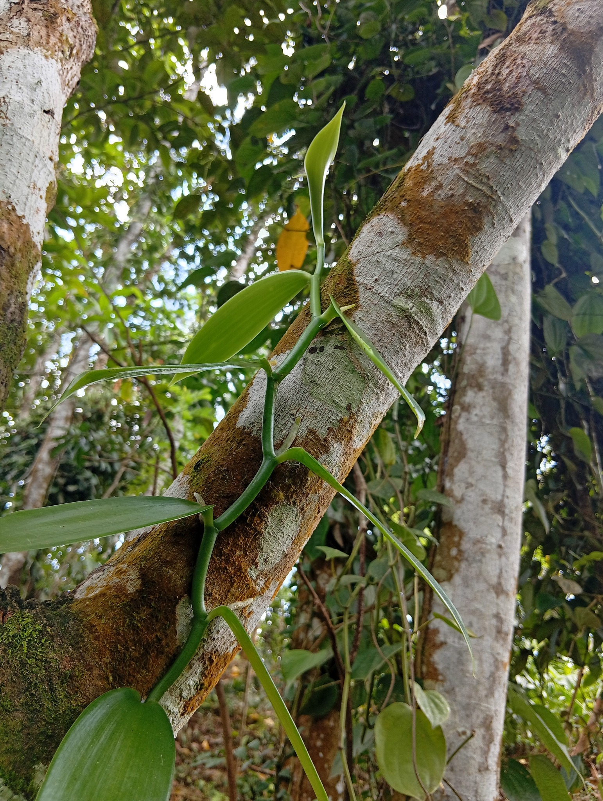

Existing vanilla
Vanilla vines approximately six months old are already cultivated on the property, using suitable trees as natural support.
YAKUPITIYA · BADURALIYA · SRI LANKA
The Printmaking Lab - Art and Organic Farming - Project combines existing vanilla cultivation, organic farming, practical land development and planned technology-assisted agriculture.
Project lead: Buddhika Nakandala
Returns and investor benefits are proposed terms, subject to the final agreement, project performance and applicable legal requirements.
THE PROJECT
A locally managed agricultural project in Yakupitiya, Baduraliya, beginning with existing young vanilla vines and a plan to progressively develop modern cultivation systems.
Vanilla vines approximately six months old are already cultivated on the property, using suitable trees as natural support.
Two plots of approximately 60 and 80 perches are available, plus an additional 5-acre land resource for broader future development.
The proposal is for capital investors while cultivation and day-to-day project management remain with the local project operator.
LAND & LOCATION
Project location reference: 6.505583, 80.200902. The Google Earth images below were supplied by the project operator.
The initial plan is to utilize approximately 30 perches from the 60-perch plot, with progressive expansion thereafter.


CURRENT CULTIVATION
The project already has young vanilla vines established on the property, using trees as natural support.


MODERN AGRICULTURE
Planned structures for systematic vine training and maintenance.
Planned shade-net systems where appropriate for the growing environment.
Potential soil-moisture, temperature and humidity monitoring with digital records.
Progressive improvement of water management using suitable irrigation systems.
INVESTMENT OPPORTUNITY
Investment enquiries: LKR 600,000–5,000,000. Proposed annual return: 20%–22%, subject to the final investment agreement, project performance and applicable legal requirements.
Principal: LKR 600,000
Interest per year: LKR 126,000
Total: LKR 1,230,000
Actual payment timing, rate, special dividend and repayment terms will be defined in the final agreement.10-YEAR INVESTOR BENEFITS
The project plans to offer special benefits to qualifying investors over a proposed 10-year relationship, subject to the final agreement and project performance.
A proposed special dividend or distribution may be offered to qualifying investors, subject to project performance, available funds and the final legal structure.
Planned cultivation photos, progress information and project updates.
Potential priority notice of future cultivation or expansion opportunities.
Potential renewal or extension discussions as the 10-year relationship develops.
DEVELOPMENT ROADMAP
Prepare support, shade, irrigation and essential infrastructure.
Add monitoring, water management and digital records.
Develop additional land as operations and capital allow.
Develop curing, quality control and market access.
RISK & LEGAL INFORMATION
Vanilla cultivation involves agricultural and business risks including weather, disease, pests, plant loss, production variability, labour costs, market-price fluctuations and other factors.
The proposed 20%–22% annual return and any special dividend are not presented as guaranteed or risk-free returns.
Prospective investors should obtain appropriate professional legal and financial advice. The final investment structure should be reviewed for compliance with applicable Sri Lankan laws and any requirements relevant to overseas investors.
INVESTOR ENQUIRY
For the detailed proposal and investment discussion: